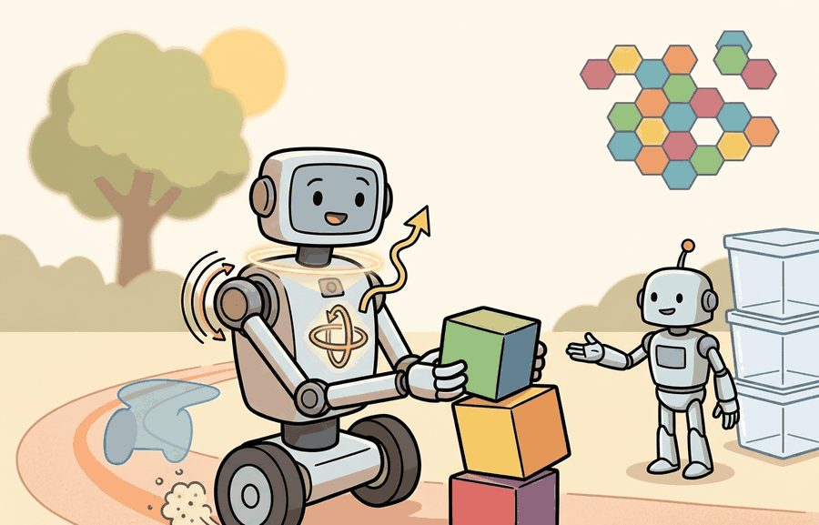

"The world did not tell the robot it had moved. The encoders did."
A Wheel That Kept Its Own Counsel

Figure 8.3A: IMU, wheel odometry, and joint encoders integrated on a mobile manipulator: each sensor contributes to a different part of the state estimate, and drift accumulates differently when any one source is lost.
This section assumes familiarity with the sensor taxonomy and noise trade-offs introduced in section 8.1. The integration error and drift mechanics developed here are the primary motivation for sensor fusion covered in section 8.7, and the same dead-reckoning model reappears in section 29.2 as the prediction step inside SLAM. Readers who already understand IMU bias and the double-integration blowup may skip directly to section 8.7.
Big Picture
A warehouse robot drifts 10 meters off course in 20 seconds from a single tiny accelerometer bias: no wheel slip, no obstacle, just physics. Proprioceptive sensors (Inertial Measurement Units (IMUs), wheel encoders, joint encoders) are the only signals available when cameras go dark, GPS drops out, or the robot moves faster than a perception pipeline can process. Modern embodied AI depends on these streams for every low-latency control decision. The sections that follow build the double-integration model by hand, measure drift accumulation, and establish why proprioception alone is never enough and why fusing it with absolute measurements is the central problem of mobile robotics.
Bolt a perfect robot to a workbench, power it down to zero motion, and its own inertial sensor will still swear it has wandered ten meters away within twenty seconds: that confident lie, born from a bias too small to see, is the central drama of proprioception. Figure 8.3A shows how the three proprioceptive sensors at the heart of that lie sit together on one mobile manipulator, each feeding a different part of the state estimate. This section defines the object of study, connects it to the agent loop, and tests it with a compact implementation.
The key question in IMU, wheel odometry, joint encoders, proprioception is practical: what must the agent know, what can it observe, what action is available, and what evidence shows that the action worked under the stated conditions?
Action Is The Test
A representation earns its place when it changes the measurable action interface. In IMU, wheel odometry, joint encoders, proprioception, the reader should keep asking which decision becomes easier, safer, or more reliable.
Theory
For IMU, wheel odometry, joint encoders, proprioception, the practical design rule is to make the interface inspectable before optimization begins: inputs, outputs, units, latency, bounds, and failure labels should all be visible in the saved artifact.
Mechanism
The mechanism in IMU, wheel odometry, joint encoders, proprioception is the contract between representation and action. Name what enters the module, what leaves it, which assumptions make that transformation valid, and which log would reveal a bad handoff.
Worked Example: Dead Reckoning and IMU Drift
An inertial measurement unit reports linear acceleration and angular rate, never position directly. To get position you integrate acceleration twice (velocity, then position), a process called dead reckoning. The trouble is that integration also accumulates error. A real accelerometer reading is $a_{\text{meas}} = a_{\text{true}} + b + n$, where $b$ is a slowly varying bias and $n$ is white noise. The bias is the killer: a constant bias $b$ double-integrates into a position error that grows like $\tfrac{1}{2} b t^2$, quadratically in time, a phenomenon engineers call quadratic drift from bias. Gyroscope bias behaves the same way for heading, and a wrong heading then steers the whole position estimate sideways. This is exactly why an IMU alone cannot localize for long, and why it must be fused with an absolute reference such as a camera, wheel odometry, or GPS.
Think of IMU bias like a kitchen scale that reads 5 grams heavy on every measurement. If you weigh a single ingredient the error is trivial, but if you weigh ten sequential additions and each one is 5 grams over, the total recipe is 50 grams wrong. With double integration the situation is worse: the first integral (velocity) accumulates the bias linearly, then the second integral (position) accumulates that already-growing velocity error again, so the final position mistake grows with the square of elapsed time. A tiny miscalibration that seems harmless at one second becomes a navigational catastrophe at twenty.
# 1D dead reckoning: integrate a noisy, biased accelerometer to position.# Truth: the body sits still, so true accel, velocity, position are all 0.importnumpyasnpdt=0.01# 100 Hz IMUsteps=2000# 20 secondsrng=np.random.default_rng(1)accel_bias=0.05# m/s^2 constant bias (uncalibrated)accel_noise=0.02# m/s^2 white noise (1 sigma)a_meas=accel_bias+rng.normal(0.0,accel_noise,size=steps)vel=np.zeros(steps+1)pos=np.zeros(steps+1)forkinrange(steps):vel[k+1]=vel[k]+a_meas[k]*dt# integrate accel -> velocitypos[k+1]=pos[k]+vel[k+1]*dt# integrate velocity -> positiont=steps*dtprint(f"after {t:.0f} s: velocity drift = {vel[-1]:.2f} m/s")print(f"after {t:.0f} s: position drift = {pos[-1]:.2f} m")print(f"closed-form bias term 0.5*b*t^2 = {0.5*accel_bias*t**2:.2f} m")
Code Fragment 8.3.1: this dead-reckoning loop integrates a perfectly still IMU that has only a tiny 0.05 m/s^2 bias. After 20 seconds the velocity has drifted to about 1 m/s and the position to nearly 10 m, matching the closed-form $\tfrac{1}{2} b t^2 = 10$ m. The simulation shows why proprioceptive dead reckoning needs frequent correction from an absolute sensor.
Step-Through: double integration of a biased accelerometer
Trace dead reckoning by hand for the first four samples of a still IMU at $dt = 0.1$ s with constant bias $b = 0.5$ m/s$^2$ and no noise. Start from $v_0 = 0$, $p_0 = 0$, and apply $v_{k+1} = v_k + a\,dt$ then $p_{k+1} = p_k + v_{k+1}\,dt$.
Velocity climbs linearly (0.05, 0.10, 0.15, 0.20), but position accelerates away (0.005, 0.015, 0.030, 0.050): each increment is bigger than the last. The closed-form check at $t = 0.4$ s gives $\tfrac{1}{2} b t^2 = 0.5 \times 0.5 \times 0.16 = 0.040$ m, close to the discrete 0.050 m, with the small gap being the discretization error of forward Euler. The robot believes it has moved 5 cm while sitting perfectly still.
Library Shortcut
The fragment should expose one inertial or encoder update and its covariance (the matrix that encodes how uncertain the estimate is and how its errors correlate across dimensions). robot_localization, tf2, and ROS 2 bag replay then provide the maintained path for fusing motion streams.
Before running Kalibr's kalibr_calibrate_imu_camera, record at least 60 seconds of completely stationary IMU data and verify that the Allan deviation plot (a log-log plot of measurement variability against averaging time, the standard way to read off an IMU's noise and bias-stability parameters) shows a clear noise floor; without this step Kalibr cannot separate angle random walk from bias instability, and the resulting noise parameters will be wrong by an order of magnitude.
In ROS 2's robot_localization EKF (extended Kalman filter, the nonlinear estimator that fuses noisy sensor streams into one state estimate) node, set imu0_differential: true whenever your IMU lacks a magnetometer; otherwise the node treats orientation as absolute and produces a heading jump the first time the filter initializes from a non-zero yaw.
A stationary bias measurement taken cold and again after five minutes of motor-on warm-up will reveal whether thermal drift is large enough to require online bias estimation rather than a fixed factory value.
Practical Recipe
Pin every sensor to its physical coordinate frame before writing a single line of fusion code. For a TurtleBot 3 or Clearpath Husky, this means verifying the IMU's base_link-to-imu_link static transform in your URDF (Unified Robot Description Format, the XML file that defines a robot's links, joints, and sensor frames); a sign flip in any axis silently turns a forward acceleration into a reverse command.
Run a stationary bias test for at least 60 seconds at operating temperature. A Bosch BMI088 on a cold desk reads a different gravity vector than the same chip after five minutes of motor-on current; record both and compare before accepting a factory calibration.
Stress the odometry model with three primitives: drive 1 m straight on the real floor surface, turn 360 degrees in place, and execute a stop-start cycle. A TurtleBot 3 Burger on polished concrete shows roughly 2 percent slip on the straight run and 1.5 degree heading error per full rotation (typical laboratory measurements as of 2024; values vary with wheel wear and surface condition); on carpet those numbers double. Know your floor before trusting your map.
For a manipulator such as the Franka Emika Panda or a Universal Robots UR5e, check each joint's commanded-versus-measured angle during a slow joint-space sweep. A gap larger than 0.1 degrees at low velocity usually points to a stale zero calibration or a missed homing step, not a controller bug.
Log IMU innovation residuals, encoder tick-rate drop-outs, and timestamp jitter side by side with the controller output. On ROS 2, ros2 topic hz /imu/data and ros2 topic delay /imu/data expose rate and latency in real time; a jitter spike above 5 ms at 100 Hz produces a velocity estimate error that appears as a tremor in the end-effector trajectory.
Common Failure Mode
The common mistake in IMU, wheel odometry, joint encoders, proprioception is to celebrate the component score before checking the closed-loop handoff. The failure usually appears at the boundary: stale state, wrong frame, delayed action, saturated actuator, or metric that ignores the real task cost.
Practical Example
When the Skydio X2 drone loses GPS under a bridge, its flight controller falls back to IMU plus visual-inertial odometry, and the telemetry log must capture not just "did it hold position" but the IMU innovation residual (the innovation is the gap between what a sensor measured and what the estimator predicted it would measure, so a large residual flags a surprised filter), the VIO feature-track count, and the moment the EKF rejected a measurement. A Boston Dynamics Spot climbing stairs logs joint torque residuals per leg so that a slipped foot shows up as a contact-detector flip, not as a vague tracking error. Without these intermediate traces, a drift event on polished warehouse concrete is indistinguishable from a true obstacle, and the post-mortem cannot tell whether the estimator failed or the controller did.
Real-World Application: warehouse logistics
Amazon's Kiva-derived drive units navigate fulfillment-center floors largely by wheel odometry and IMU, periodically resetting their accumulated drift against a dense grid of fiducial markers (2D barcodes) embedded in the floor. The proprioceptive estimate carries the robot between markers at high update rate, and each marker sighting collapses the drift back to near zero, which is exactly the fuse-with-an-absolute-reference pattern this section motivates.
Memory Hook
Treat imu, wheel odometry, joint encoders, proprioception like a control-room label. If the label does not tell a future debugger what moved, what sensed, or what failed, it is decoration rather than engineering knowledge.
Research Frontier
Neural IMU preintegration and learned bias correction (2024-2026). Classical IMU preintegration on a manifold (Forster et al., 2017) assumes a fixed noise model. Recent work trains small neural networks to predict and subtract time-varying bias online, achieving 40-60% reduction in heading drift on dynamic platforms. Key example: TLIO (Liu et al., 2020) showed the concept; LLIO (Brossard et al., 2024, ICRA) extends it to legged robots with ground-contact-conditioned bias estimation, directly addressing the failure mode where stance-phase vibration corrupts the gyroscope reading. The Berkeley EECS Hybrid Robotics group and ETH Zurich RSL are both active here.
Proprioception-driven contact state estimation for legged locomotion (2024-2025). Quadruped controllers (ANYmal, Spot, MIT Mini Cheetah) now use joint torque and velocity residuals as the primary contact detector rather than foot-mounted force sensors, which are fragile in field conditions. "DreamWaQ" (Nahrendra et al., 2023) and "Extreme Parkour" (Zhuang et al., 2024, RSS) demonstrate that a recurrent policy conditioned only on proprioceptive history (joint angles, velocities, base IMU) can traverse highly unstructured terrain without any exteroceptive sensor. The open research question is how to extract interpretable contact-state estimates from these black-box policies so that a separate planner can reason about slip and terrain class.
Continuous-time IMU-encoder fusion with Gaussian process interpolation (2024-2026). Standard Kalman-based fusion assumes measurements arrive at fixed discrete time steps, but in practice IMU samples (1 kHz), joint encoders (500 Hz), and cameras (30 Hz) have incommensurate clocks and variable latency. Continuous-time trajectory representations using Gaussian processes (Anderson and Barfoot, 2015; extended by Cioffi et al., 2024, RA-L) model the full trajectory as a function of time, allowing any sensor to be queried at its exact timestamp without interpolation error. This approach is moving from research prototype toward production in space and surgical robotics, where timestamp uncertainty dominates other error sources.
Open problem for PhD students. All three directions above degrade gracefully in the lab but fail silently in the field when sensor clocks desynchronize or motor currents saturate the IMU through mechanical coupling. An open problem is designing a real-time, self-supervised anomaly detector that distinguishes "IMU bias has drifted" from "the robot is on unexpected terrain" from "the encoder has lost a tooth" using only the proprioceptive stream itself, without access to an external ground-truth reference. Current approaches either require a training distribution that covers the failure mode in advance or need an exteroceptive reference to generate labels, neither of which is available in novel environments.
Self Check
Can you name the observation, state estimate, action, success metric, and most likely failure mode for IMU, wheel odometry, joint encoders, proprioception? If not, the system boundary is still too vague.
Production Pattern
IMU, wheel odometry, joint encoders, proprioception sits inside the Part II robotics contract: geometry defines where things are, kinematics defines what motion is possible, dynamics defines what motion costs, control defines how errors are corrected, and sensing defines what the agent can know on time.
Proprioceptive streams need bias, drift, quantization, and timestamp handling before fusion in a Kalman or extended Kalman filter. The idea has an intuitive role, a formal interface, a runnable check, and a failure mode that can be reproduced, making it useful to practitioners, builders, and researchers alike.
Mechanism To Watch
For IMU, wheel odometry, joint encoders, proprioception, state estimation converts imperfect observations into a belief usable by control. Preserve calibration, covariance, timestamp, frame, dropout behavior, and latency.
Library Choices And Verification Checks
Tool or Library
What It Handles
Verification Check
OpenCV
handles camera models, calibration, projection, and vision preprocessing
Verify intrinsics, distortion, image timestamp, and frame-to-camera transform.
ROS 2 robot_localization
fuses odometry, IMU, GPS, pose, and twist streams through ROS estimation nodes
Verify covariance, frame IDs, timestamps, and rejected measurement counts.
Verify process noise, measurement noise, innovation, and covariance growth.
Kalibr
supports practical work on IMU, wheel odometry, joint encoders, proprioception
Verify the library output against the hand-built baseline on one small case.
Open3D
supports practical work on IMU, wheel odometry, joint encoders, proprioception
Verify the library output against the hand-built baseline on one small case.
Use this recipe when turning IMU, wheel odometry, joint encoders, proprioception into code, a simulator experiment, or a robot diagnostic. The point is not to use every library. The point is to keep the hand-built baseline and the maintained-tool path comparable.
Define each sensor message with units, frame, timestamp source, calibration file, and covariance meaning.
Run a static test, a slow-motion test, and a dropout test before fusing streams.
Compare the hand filter with FilterPy or ROS 2 robot_localization using identical measurements and noise settings.
Log innovation, covariance, delayed messages, rejected measurements, and downstream control effect.
Treat perception output as a belief with uncertainty, not as ground truth handed to the controller.
Evidence Gate
For IMU, wheel odometry, joint encoders, proprioception, compare methods only through one saved artifact that preserves the inputs, outputs, units, timestamps, latency budget, configuration, seed, metric definition, and failure labels relevant to this section. The comparison is meaningful only when the same script evaluates the same panel.
Exercise Extension
Extend the section exercise by adding one perturbation specific to IMU, wheel odometry, joint encoders, proprioception and one latency or uncertainty check. Save the result in the EvidenceRecord schema, then explain which library output you trust and why.
Proprioceptive failures often look like weak control. Check IMU bias, encoder quantization, wheel slip, joint zero offsets, sampling rate, and integration frame before tuning the policy.
Technical Core
IMU, wheel odometry, joint encoders, and proprioception are the robot's self-sensing channels. They are fast and local, which makes them excellent for control, but their errors accumulate when the outside world is not used to correct drift. Figure 8.3.T summarizes the chain this section must preserve when moving from a teaching example to a real embodied system.
Figure 8.3.T: Reading left to right, this chain is what keeps a fast-but-drifting proprioceptive estimate honest: each block must stay explicit, because a single skipped link (an unstated frame, an unmodeled bias, an unlogged dropout) is exactly where dead reckoning fails silently.
Formal Object
A compact wheel odometry model is $\Delta s=(r/2)(\Delta\phi_R+\Delta\phi_L)$ and $\Delta\theta=(r/b)(\Delta\phi_R-\Delta\phi_L)$, where $r$ is wheel radius, $b$ is wheel separation, and $\Delta\phi$ are encoder increments. An IMU model writes measured acceleration as $a_m=a+b_a+\eta_a$ and angular velocity as $\omega_m=\omega+b_\omega+\eta_\omega$. Bias terms $b_a$ and $b_\omega$ explain why integrating inertial data without correction eventually drifts.
Checkpoint
So far: IMU bias double-integrates into quadratic position drift, wheel odometry converts encoder ticks into displacement and heading through a closed-form pair of equations, and both models depend on an assumption (constant bias, no wheel slip) that real hardware violates; the next paragraph walks through exactly how that no-slip assumption breaks and what it costs downstream.
Wheel odometry needs no external infrastructure, which makes it the default motion source for indoor mobile robots. The robot infers distance traveled by counting how many times each driven wheel rotates. A magnetic or optical encoder on each wheel shaft generates a fixed number of pulses per revolution. Firmware counts those pulses, multiplies by wheel circumference, and applies the differential equations above to split the result into forward displacement and heading change. The model rests on one critical constraint: the contact patch must roll without sliding. This no-slip assumption holds on hard, dry floors, but it breaks on carpet, wet tile, or during aggressive acceleration. When slip occurs, the encoder still counts rotations, so the estimated position advances even though the robot did not travel that far. A 2% slip rate on a 50-meter warehouse run places the robot's believed position 1 meter ahead of its true position. That single meter shifts every SLAM landmark into the wrong cell and sends the planner straight into a shelf it thinks it has already cleared. In embodied AI, a slipped estimate poisons every downstream module. A SLAM map built on slipped odometry places landmarks in the wrong location, and a planner that trusts a wrong pose commands the robot toward obstacles it believes it has already passed.
How small asymmetries become navigation errors
How much does a small encoder asymmetry actually matter over a real mission? The answer is more consequential than it looks.
Consider a specific case. A TurtleBot 3 Burger has wheels of radius $r = 0.033$ m separated by $b = 0.160$ m, each equipped with a 3,591-count-per-revolution magnetic encoder. One full wheel revolution produces 3,591 encoder ticks, giving a linear resolution of $2\pi r / 3591 \approx 0.058$ mm per tick. Suppose the robot drives a nominal 1 m straight line, the right encoder reads 4,834 ticks, and the left reads 4,819 ticks. The odometry equations then yield $\Delta s \approx 0.999$ m and a heading error of $\Delta\theta \approx 0.0031$ rad (about 0.18 degrees). That heading error looks negligible, but compounded over ten straight segments of 1 m each it steers the robot 31 mm off course laterally. Small encoder asymmetries accumulate into navigation-relevant errors over any real mission distance. This is why wheeled platforms that cannot rely on GPS indoors pair odometry with a LiDAR scan-matcher such as Cartographer or a visual odometry front-end such as ORB-SLAM3 to bound the lateral drift.
Estimate IMU bias while the robot is stationary, then repeat after warm-up.
Run straight-line, turn-in-place, and stop-start tests to expose slip and backlash (the small gap in a gear train that lets a shaft reverse direction slightly before the load actually moves).
Compare integrated odometry against an external reference such as motion capture, AprilTags, or LiDAR scan matching.
Log saturation, dropped messages, and timestamp jitter before blaming the controller.
Joint Encoders: What, Why, How, and When They Break
What: a joint encoder reports the angular position of a motor shaft, typically as an absolute or incremental count.
Why: the controller needs to know where each limb is before it can compute the torque command that moves it somewhere else; without this feedback, even a well-tuned PD law diverges.
How: an incremental optical or magnetic encoder generates pulses as the shaft rotates; firmware integrates the count and divides by ticks-per-revolution times the gear ratio to yield joint angle. On the Franka Emika Panda, 14-bit absolute encoders on each of seven joints give a resolution of about 0.022 degrees per step, fine enough that quantization is negligible compared to joint compliance and gearbox backlash.
When it breaks: at startup, an incremental encoder does not know its absolute position until a homing routine drives the joint to a hard stop or a reference mark; missing that routine sends the controller into a region it believes is safe but is not. Backlash in the gearbox means the encoder can report a stationary shaft angle while the output link is still moving, creating a lag that appears as oscillation at contact boundaries.
Technical Contract For Proprioceptive Sensors
Signal
What It Provides
Diagnostic Check
IMU acceleration and gyro
High-rate changes in linear acceleration and angular velocity.
Stationary bias test, Allan-style drift inspection, and gravity direction sanity check.
Wheel odometry
Fast planar motion estimate for mobile bases.
Straight-line error, turn-in-place error, and slip under different floor materials.
Joint encoders
Joint position, velocity, and sometimes effort proxies.
Zero offset, backlash, limit consistency, and commanded-versus-measured lag.
Proprioceptive contact cues
Unexpected resistance, impact, or loss of support.
Residual between expected torque and measured response during repeatable contact.
Expected output is a drift curve: error should grow predictably when no external correction is available, then contract when a trustworthy external measurement arrives. A flat drift curve during wheel slip usually means the covariance model is too optimistic.
That shape of the drift curve, always climbing until something outside the robot reins it in, points straight at the single lesson the whole section has been building toward.
Proprioceptive sensors tell the robot what it did; only an absolute reference can tell the robot where it is.
Failure Mode To Test
A proprioceptive estimate fails when wheel slip, IMU bias, encoder wraparound, or joint backlash is hidden behind a smooth pose trace with unrealistically small covariance.
A common misconception treats the IMU as an indoor GPS that reports position. It does not. An IMU measures only linear acceleration and angular rate; position must be recovered by integrating twice, and that double integration turns a tiny constant bias into quadratic error growth. A robot dead-reckoning on the IMU alone accumulates meters of position error within seconds, which makes closed-loop control and map-building impossible without periodic correction from an absolute reference such as a camera, LiDAR scan-matcher, or wheel odometry. The correct mental model: proprioceptive sensors report changes and rates, never absolute state, so they always need a fusion strategy that anchors the estimate to the world.
Section References
Core references for IMU, wheel odometry, joint encoders, proprioception: Modern Robotics; Murray, Li, and Sastry; Siciliano et al.; LaValle; and official documentation for Drake, MuJoCo, Pinocchio, CasADi, python-control, GTSAM, ROS 2, and OpenCV as applicable.
Use these references to check notation, frame conventions, units, solver assumptions, and maintained-library behavior.
Key Takeaway
IMU, wheel odometry, joint encoders, proprioception is useful when it makes the perception-action loop more reliable, not when it merely adds a more impressive model name.
Exercise 8.3.1
Design a method-matched experiment for IMU, wheel odometry, joint encoders, proprioception. Specify the environment, observations, actions, metric, one perturbation, and the library output you would compare against the hand-built baseline.
Project Ideas
Beginner (weekend): IMU drift visualizer in PyBullet. Build a simulated wheeled robot in PyBullet that drives a 5 m straight path while you log its IMU acceleration output and double-integrate it to position, then plot the drift against ground truth. The key challenge is making the bias and noise parameters configurable so you can see quadratic drift grow in real time without writing any ROS 2 infrastructure.
Intermediate (1-2 weeks): Wheel odometry vs. ground truth benchmarker in ROS 2. Deploy a TurtleBot 3 (real or simulated in Gazebo with ROS 2) and drive a repeatable figure-eight path across three floor materials, recording /odom against an AprilTag-based ground truth frame; report per-material slip coefficients and heading error per revolution. The key challenge is synchronizing the tag detector timestamps with the odometry stream so the error is attributable to slip rather than clock skew.
Intermediate (1-2 weeks): Proprioceptive state estimator for a LeRobot arm. Using the LeRobot library with a low-cost SO-100 or similar serial manipulator, write a joint-encoder-only forward-kinematics state estimator and compare end-effector position estimates against a webcam-based marker tracker during slow joint-space sweeps. The key challenge is exposing per-joint zero-offset errors and backlash lag as separate logged quantities rather than lumping them into a single tracking error.
Lab: watch IMU bias eat your position estimate
Goal: measure how quadratic drift grows as a function of accelerometer bias, and confirm the $\tfrac{1}{2} b t^2$ law empirically.
Tools needed: Python 3 with NumPy and Matplotlib (no robot or ROS required). Start from Code Fragment 8.3.1 above.
What to do: wrap the dead-reckoning loop in a function that takes accel_bias as an argument and returns the final position drift after 20 seconds. Sweep the bias across [0.0, 0.01, 0.02, 0.05, 0.1, 0.2] m/s$^2$, run each value with 50 different random-noise seeds, and record the mean and standard deviation of the final drift.
What to vary: the bias magnitude, the integration step dt (try 0.001, 0.01, 0.1 s for the same total duration), and the noise level accel_noise.
What to observe: plot mean final drift against bias on linear axes and confirm the points fall on a straight line through the origin (drift is proportional to bias for fixed $t$). Then plot drift against time for one fixed bias and confirm the curve is a parabola, not a line. Notice that changing dt barely moves the bias-driven drift but strongly changes the noise-driven spread: bias is a systematic error that no amount of faster sampling can remove, while noise is a random walk that averages down. The takeaway you should see in the numbers: only an absolute reference, not a better IMU clock, kills the bias term.